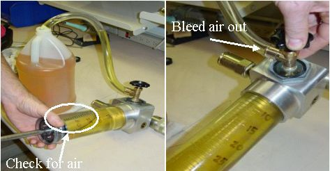
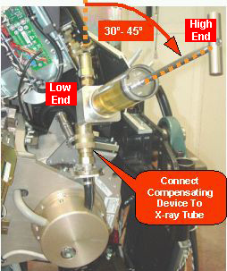

Operating Documentation
Direction 5193855-800, Rev# 4
LS 5.X RT Ltd. Access Service Information Adv
Operating Documentation |
| Required Persons | Preliminary Reqs | Procedure | Finalization |
|---|---|---|---|
| 1 | Timing Not Applicable | 30 mins | Timing Not Applicable |
Located on the Heat Exchanger's side opposite the pump is a bellows. The factory fills the heat exchanger such that there are 20 units of coolant and 40 units of air inside the bellows at room temperature. The air allows for expansion of liquid as the tube heats up. Upon tube change, the 20/40 ratio inside the bellows can change. For example, a tube that is above room temperature will force more coolant liquid from the tube to be present in the bellows because the volume of the coolant has expanded due to the higher tube temperature. If a tube is removed while it is above room temperature, this coolant is then “trapped” inside the bellows. Installing a new tube at room temperature then results in more overall liquid inside the system. If the volume of liquid is too great such that the bellows has no room for expansion, overpressure errors occur and the system will abort frequently (or not scan at all) due to these errors.
Fill Heat Exchanger Unit with maximum amount of oil
Remove 30 units of oil
Performed at PM
| Last Revised: | 10 November 2005 |
| Item | Qty | Effectivity | Part# | Manufacturer | |
|---|---|---|---|---|---|
| Oil Compensation Tool | 1 | - | 5125182 | - | |
| Transformer Oil | At least 1 Liter | - | T0552G (1 gallon) | - | |
| Item | Qty | Effectivity | Part# | Manufacturer |
|---|---|---|---|---|
| Dry Wipes | - | - | - | |
| Latex Gloves (optional) | - | - | - |
| Unnecessary Exposure to Patient Possible | |
| Large amounts of air in the heat exchanger can cause IQ artifacts or scan aborts | |
| NEVER open the compensation tool's valve while it is connected to the gantry. |
| Condition | Reference | Eff |
|---|---|---|
Read the Frequently Asked Questions (FAQ) near the end of this procedure. | - | - |
No heat exchanger oil related issues such as oil loss or excessive air in heat exchanger. | - | - |
Push the tool's piston until it stops to force out the air inside.
Attach the compensation tool's hose onto the valve spout.
Insert the open end of the hose into the oil can.
Open the valve fully
Slowly pull the piston back as far as you can to fill the cylinder with oil
Some air may enter. This is ok.
| NOTE: | Small amounts of oil may leak from the small hole at the end of the tool, near the handle. |
Tip the compensation tool so that the piston handle is up, forcing any air to rise to the top of the cylinder
Illustration 1: Filling Compensation Tool With Oil

If there is air present in the cylinder, you will need to bleed the air from the cylinder.
Lay the tool flat. The tool is designed such that the valve area by the sightglass is the highest point when flat, thus the air will rise to the valve area.
Next, push the piston all the way in again, forcing out all air and liquid, then slowly pull back. Usually this will remove all of the air, however, a few iterations may be necessary.
Illustration 2: Bleeding the Compensation Tool of Air

With the cylinder full and air free, close the valve tightly.
Prepare for the next step by gathering a dry absorbent wipe.
Hold the tool above the oil can and slowly pull the feeder tube off of the tool, draining the oil into the can.
Wipe any residual oil.
Remove the gantry side and front covers.
Rotate the gantry so that the tube is between the 3 o'clock and 4 o'clock positions
Safely remove power to the gantry
Engage Gantry Rotational Lock. This forces the gantry to be stationary while moving the compensation tool's piston.
| Tool can be used on oil-based systems only. Use of this tool on water-based cooled systems (blue hoses) will cause unknown system damage. | |
Connect the compensation tool between the pump and the X-Ray tube as shown. The handle should angled upward.
Illustration 3: Compensation Tool Connected

| Unnecessary Exposure to Patient Possible | |
| Large amounts of air in the heat exchanger can cause IQ artifacts or scan aborts | |
| NEVER open the compensation tool's valve while it is connected to the gantry. |
Keeping the handle higher than the rest of the tool, push the handle / piston until it stops. This fills the heat exchanger and bellows with oil, while keeping any small traces of air at the top of the cylinder.
| NOTE: | It may be possible to push the piston such that it bottoms out, indicating that the bellows may not be completely full with oil. In this rare case, you'll need to disconnect the tool, fill it with oil per instructions, and push more oil in until the bellows is full. |
With the bellows now full of oil, slowly pull back on the handle of the tool so that 30 units of oil are removed. Use the bottom of the piston (where oil and the piston meet) as your line to measure with. The bellows may slowly push a small amount oil back into the cylinder; this is normal.
| NOTE: | In the rare case that you do not have room to pull 30 units of oil from the system, you can perform the oil removal in two steps. |
Disconnect the tool and reconnect the pump and heat exchanger hoses to the tube.
Secure the quick disconnect safety mechanisms. The torque spec. for the quick disconnect safety mechanisms is 9.9 N-m (7.3 lb-ft, 88 lb-in, 101 kg-cm), however, if the locking mechanism rotates in relation to the quick disconnect, tighten slowly until it does not do so.
| NOTE: | Do not severely overtighten the M6 bolts. Doing so can cause the quick disconnects to leak. |
Can I use silicon-based oil in this procedure?
A: NO! The part number for oil is included in this procedure and you may not deviate.
Why does the tool only hold 35 units of oil? Wouldn't more volume make the compensation process easier?
A: Yes it would. Only a few early units were made to hold 35 units of oil. The rest of the tools will be built to hold 50 units.
What do I do if I have extra oil and no place to store it, or dispose of it?
A: In the tube crate, there is a bellows attached to the wall of the crate. Connect the tool to the hose that is attached to this bellows. Make sure the valve on the compensation tool is closed, and push the oil into the spare bellows. This bellows is refurbished when the defective tube is returned, therefore putting extra oil inside is acceptable.
How often should this procedure be performed?
The right answer is that it should be performed approximately every third tube change. But, with variables such as tube life and tube un-install temperature, there is no standard answer to this question. This is why the procedure is part of the normal Preventative Maintenance (PM) cycle. This procedure can also be a troubleshooting one if overpressure errors are a problem.
Summary:
Bellows filled with oil.
30 units of oil removed.